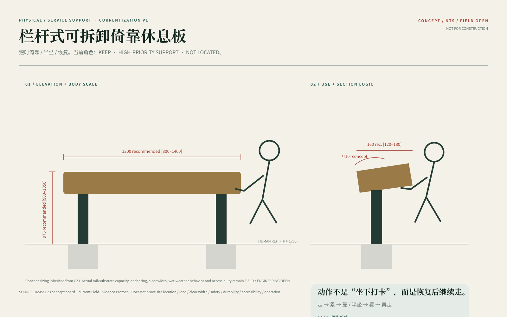
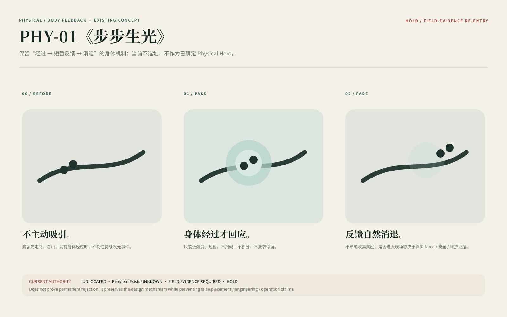

必须连续、可预期。
边缘 / 高差 / 防坠、儿童攀爬与误用、雨雾湿滑与视线条件；UNKNOWN 不得默认开放。
实体不是成果数量。它只在身体真的遇到问题时出现。
先读取真实地形、已有栏杆、停留条件与自然感官资源。只有“不设计”无法解决明确的身体问题时，才进入身体支持、短暂反馈或空间介入。
栏杆式可拆卸倚靠休息板是当前实体线中优先级最高的身体支持候选。原始设计板是身份源；技术图只负责近读。
短停、靠倚、半坐、释放通行。原板包含结构分析、三视图、材料逻辑、人体工学、产品细节、使用流程、安全与安装指南。
原始设计板存在，但当前运行环境没有取得可嵌入字节。此处保持空位，不重画、不 AI 替代。
既有 Web 的技术矢量只回答“怎么读”，不取得原始设计身份。

安装位置、净宽、碰撞、儿童误用、湿滑、材料热感与真实荷载不能由远程板面升级为工程结论。
防坠边界承担安全；身体支持承担恢复。共享一根栏杆，不代表它们是同一个功能。
边缘 / 高差 / 防坠、儿童攀爬与误用、雨雾湿滑与视线条件；UNKNOWN 不得默认开放。
短时倚靠 / 半坐、双人会车、转身回看、热湿滑与维护；安装位置未现场验证 = HOLD。
不是打卡、积分或连续任务。运动语法固定为 STEP → RESPONSE → FADE；关闭动效后信息仍然成立。
点击 / 触摸左侧区域模拟脚步。每次反馈独立出现并在约 1.45 秒内消退；没有得分、累计或完成率。
它不证明现场感应、照度、供电或耐候成立。

它不是“更高级的 P02”。只有更长停留、多人姿态、观景关系或地形接触无法被更轻手段解决时，才进入单点竞争。
继续依赖已有路径、栏杆、平台与自然停留。
先复用已有可坐、可靠、可停设施。
短休、靠倚、恢复后继续；最小身体支持。
只有停留深度与场地关系值得更高景观成本时成立。
原板中的山体曲面、镜面反射与身体姿态是设计身份。设计资产保留；地点成立性尚未证明。
不把它直接升级为主方案。它只作为需要真实点位证明的空间介入候选。
身体、排水、固定与维护同时成立，Fluid Rest 才可能继续。这里建立验证链，不虚构施工尺寸。
坐、靠、起身、转身、多人并用；边缘圆角、接触温度、湿润表面与衣物摩擦。
雨雾、冷凝、排水路径、积水死角、镜面眩光、表面防滑与清洁维护。
内部支撑、地形接触、可替换层、基础与锚固只能在点位、岩土与荷载条件明确后深化。
反射、曲面与人体比例可以证明设计意图，但不能证明场地安全、耐候、结构、排水或施工许可。
没有明确场景需求 → 保留设计资产，不扩散节点。风、水声、雾、湿度、植被运动、岩石与水面反光、脚下触感已经构成清江的感官资源。新增对象只能 TRACE 或 FRAME，不能覆盖现场。
现场已经足够，只编排停留与观察。
DEFAULT极轻响应让自然条件被注意到，但不形成主角。
PREFERRED CANDIDATE只有明确停留与感官聚焦需要时建立可退出边界。
HIGHER COST / HOLDCH13 只读取现场风、光、声音、等待与停留。礼盒、明信片等记忆物属于 CH15。
现场感官板优先。原板已验证存在；当前本地像素绑定 HOLD。
不是增加方案数量，而是让已有四个家族在真实身体问题、景观成本与现场证据之间竞争。下一层是点位、尺度、材料、维护、安全与施工接口，不是继续造概念。